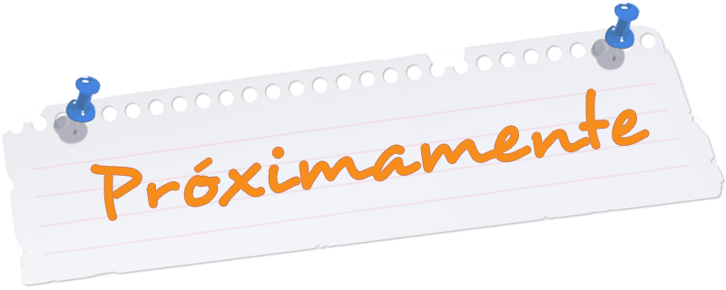

En el buzón, se abrirá un espacio donde las personas podrán expresar su malestar e incluir alguna sugerencia para dar opciones de solución al inconveniente que se les pueda presentar. BU.DEA.SU esta pensado para contar con un espacio en donde se encuentre la cercania, confianza y apoyo, en donde podra expresar sus desahogos, ideas y sugerencias asociadas al espacio o grupo de trabajo.

Pronto en esta seccion te dejaremos videos musicales que podrian ser de ayuda, mientras te adelantaremos que la musica Zen tiene varias propiedades, dentro de sus beneficios nos van a ayudar a relajar nuestra mente, ofreciéndonos tranquilidad.